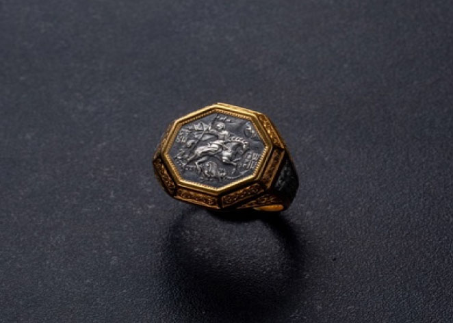
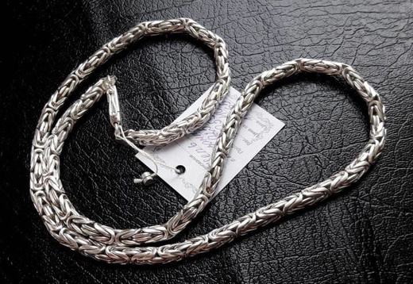
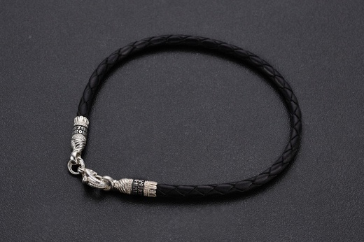
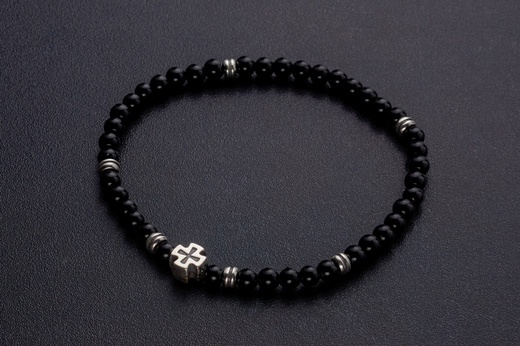
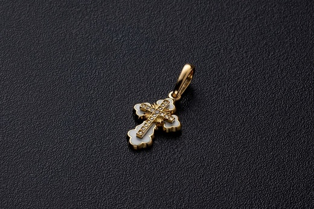
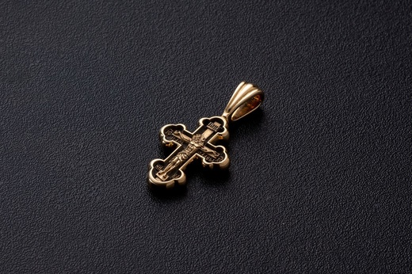

-
Великомученик Георгий Победоносец. Охранное кольцо.
Примерный вес (г.): 10Артикул 108_043Мужской перстень с печаткой, на которой изображен Георгий Победоносец во время свершения его знаменитого подвига: победа над змеем. Змей - символ дьявола-искусителя. Победа Георгия означает то, что души верующих будут избавлены от злых намерений, искушений и грехов. Внутри кольца написана короткая молитва на славянском языке, которая просит Бога защитить того, на ком это кольцо.
-
Цепь Византия
Примерный вес (г.): 10
Артикул 000_000
Византийская цепь 925 пробы, замок коробочка.
-
Кожаный браслет, плетеный вручную. Серебро с родиевым покрытием.
Примерный вес (г.): 3Артикул 15001Кожаный плетеный браслет ручной работы, который отличается особой прочностью, потому что при плетении в него вставляют тонкую, незаметную, но очень прочную капроновую нить. Такие браслеты не растягиваются и не деформируются. На его концах - специальные серебряные зажимы в форме куполов. На них написаны слова – обращения к Богу. Замком служит карабин.
На фурнитуру дополнительно нанесен слой родиевого покрытия, которое защищает серебро от потемнения и воздействий окружающей среды.
Браслет можно носить как отдельное украшение, так и дополнять бусинами, которые можно найти в специальном разделе нашего магазина. -
Чётки "Иерусалимский крест" малый, шунгит.
Примерный вес (г.):
Артикул 500794_sh
Четки из натурального камня шунгит с серебристой вставкой «Иерусалимский крест», которая дополняет основу. На обратной стороне креста нанесено: IC XC, НIКА.
-
Православный крест
Примерный вес (г.): 2
Артикул 28861zh
Православный крест из жёлтого золота с бриллиантами.
-
Крест «Распятие Христово. Покров Пресвятой Богородицы»
Примерный вес (г.): 4
Артикул 28010zh
Изящный православный крест из желтого золота с затемненным фоном. Внутри креста изображено Распятие Иисуса. По центру креста надпись «Ника». Это означает победу Христа над смертью.
На обратной стороне креста в центре изображена икона Покрова Пресвятой Богородицы. Этот образ является символом защиты Небесами человеческого рода. Верующие просят перед этим образом защиты нашего отечества, исцеления от болезней и недугов, обретения любви и достойного супруга.